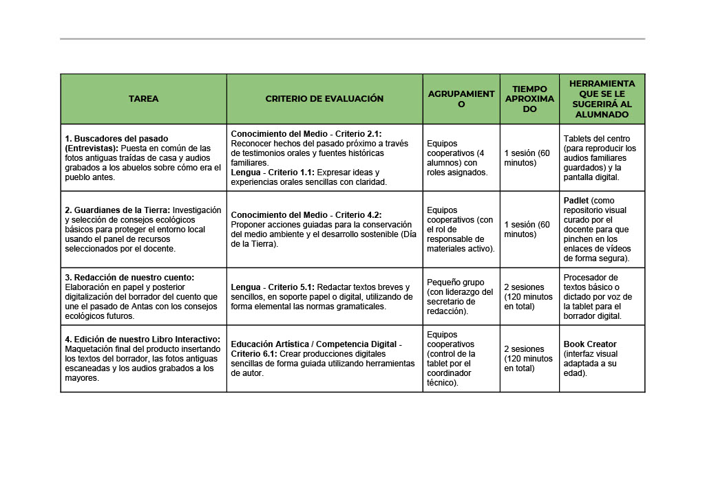

Texto
📑 Ficha Técnica de la SdA
Título: Antas en el tiempo: Guardianes de la memoria y la tierra.
Nivel: 2º de Educación Primaria.
Áreas vinculadas: Conocimiento del Medio Natural, Social y Cultural / Lengua Castellana y Literatura.

"Antas en el tiempo: Guardianes de la memoria y la tierra"
📑 Ficha Técnica de la SdA
Título: Antas en el tiempo: Guardianes de la memoria y la tierra.
Nivel: 2º de Educación Primaria.
Áreas vinculadas: Conocimiento del Medio Natural, Social y Cultural / Lengua Castellana y Literatura.
